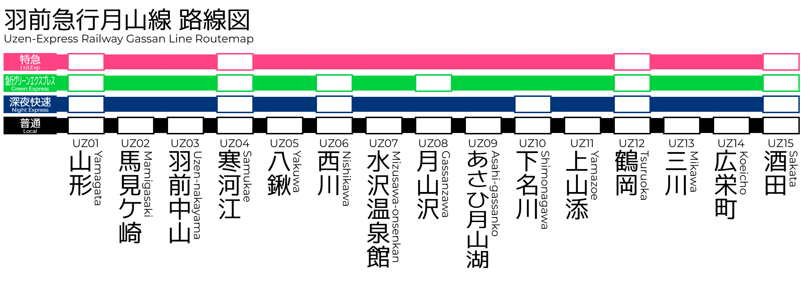

Since 1996.1.31 - 山形と酒田を110分で結ぶ、夢の超特急。
羽前急行電鉄は架空の創作物であり、実際には存在しません。また、現在制作途中です。設定まとめサイト、 管理人ページはこちら

駅名標をクリックして詳細を表示します。
山形
Yamagata
馬見ケ崎
Mamigasaki
羽前中山
Uzen-Nakayama
寒河江
Sagae
八鍬
Yakuwa
西川
Nishikawa
水沢温泉館
Mizusawa-Onsenkan
月山沢
Gassanzawa
あさひ月山湖
Asahi-Gassanko
下名川
Shimonagawa
上山添
Kami-Yamazoe
鶴岡
Tsuruoka
三川
Mikawa
広栄町
Kōeicho
酒田
Sakata